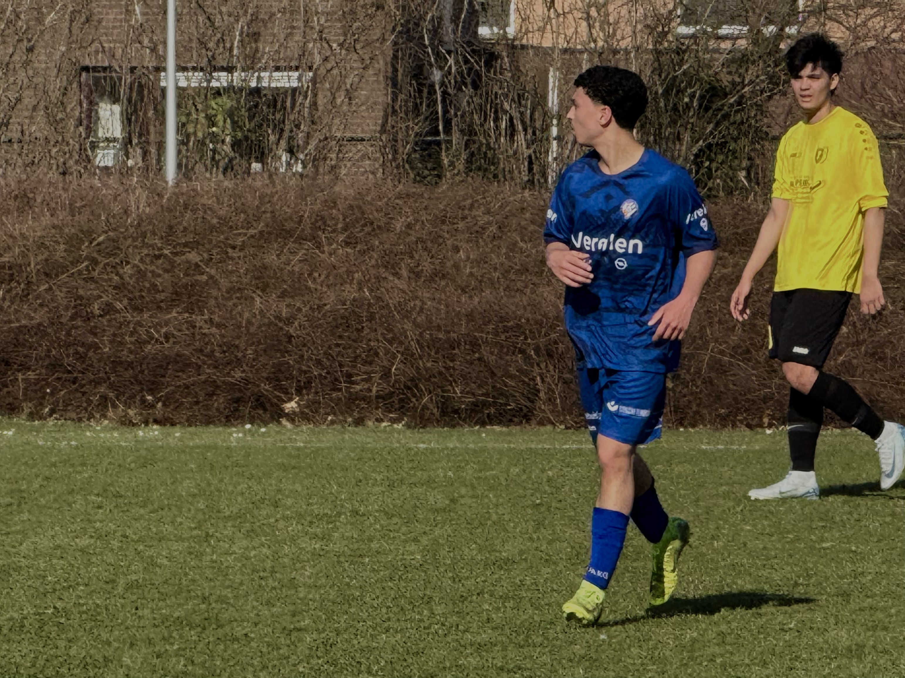
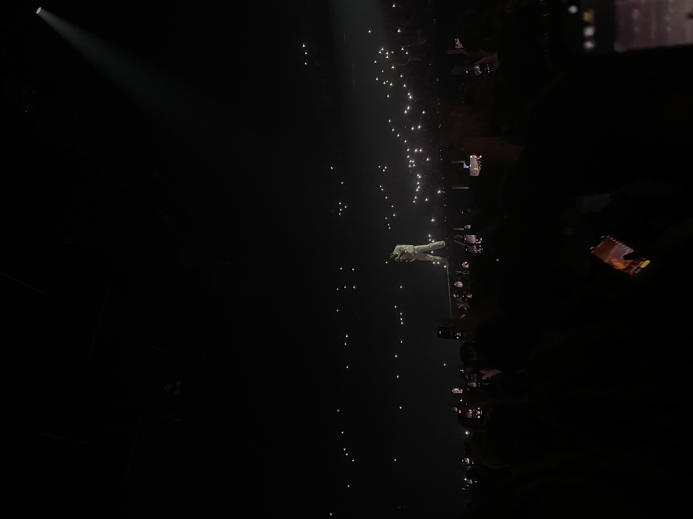
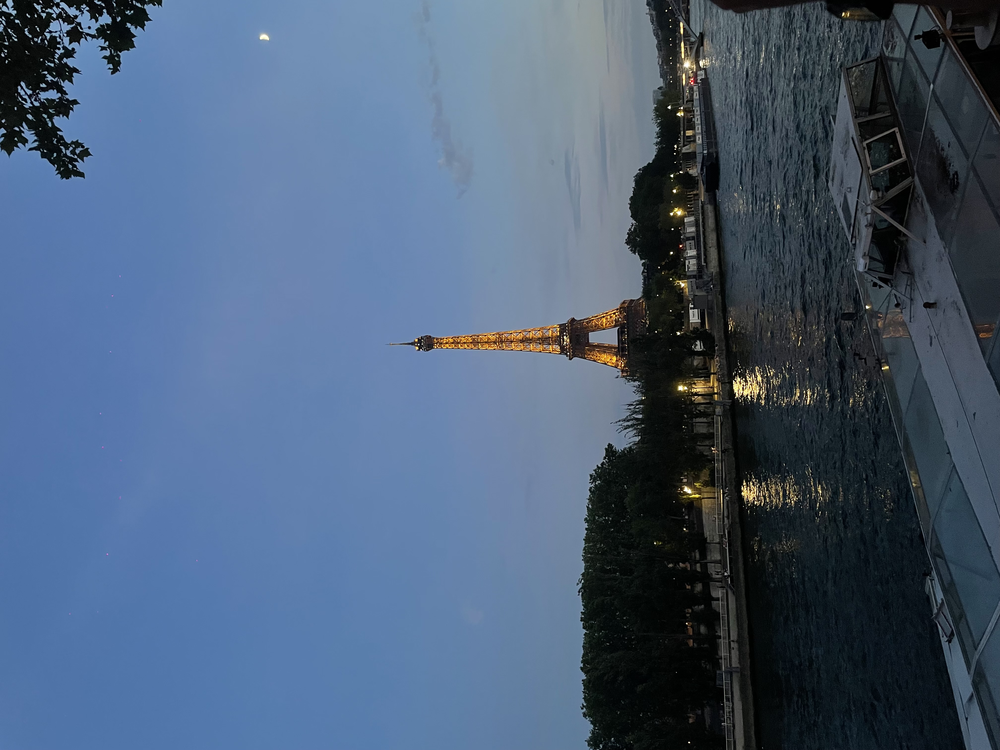
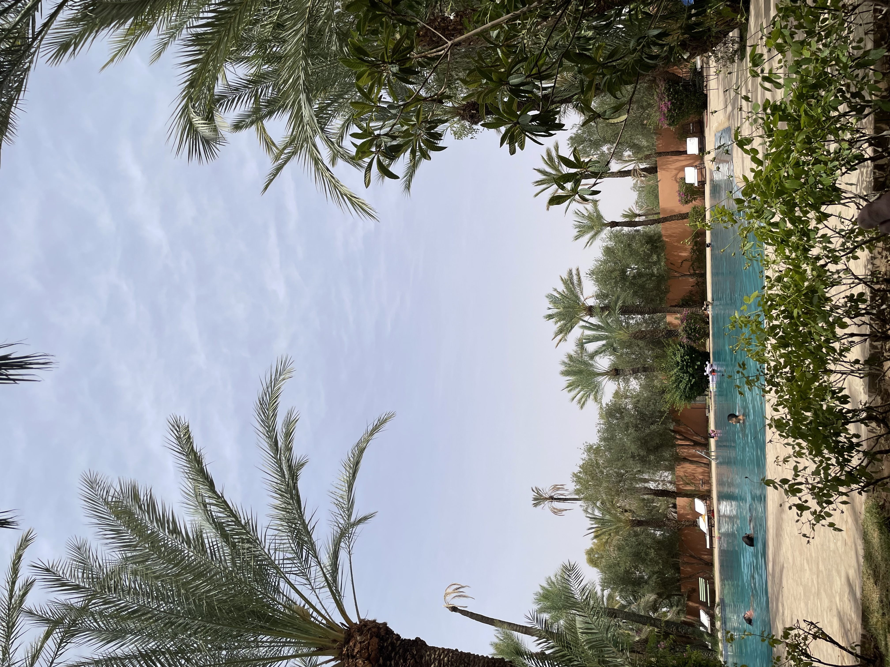

Persoonlijkheid
Ik ben een sportieve en gemotiveerde jongeman die graag samenwerkt met anderen, maar ook zelfstandig sterk staat.
Door voetbal heb ik een echte teammentaliteit ontwikkeld: ik weet wat het is om samen naar een resultaat toe te werken, verantwoordelijkheid te nemen en elkaar scherp te houden. Diezelfde instelling neem ik mee naar school en werk — ik ben hulpvaardig, leer graag nieuwe dingen en pak uitdagingen liever met enthousiasme aan dan dat ik ze uit de weg ga. Daarnaast wil ik mijn IT-kennis op een creatieve manier inzetten: niet enkel systemen en toestellen laten werken, maar ook nadenken over hoe iets eruitziet en aanvoelt. Die combinatie van techniek en vormgeving is precies waarom ik voor Digitale Vormgeving Design gekozen heb.
Hobby's

Voetbal
Op het veld staan en samen met een team naar een resultaat toewerken.
Gaming
Ontspannen en af en toe ook de competitieve kant opzoeken achter de controller.
Tekenen
Ideeën eerst op papier uitwerken, als vertrekpunt voor digitaal ontwerp.

Concerten
Ook ga ik graag naar concerten van artiesten — zo was ik bij Drake in Antwerpen.
Reizen
Ook reis ik graag, puur voor ontspanning.
Plaatsen waar ik al geweest ben:



Ook al bezocht: